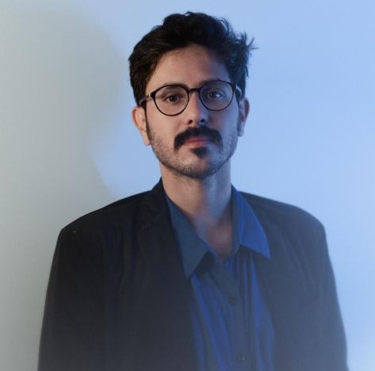
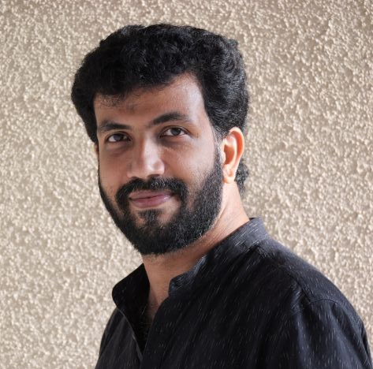
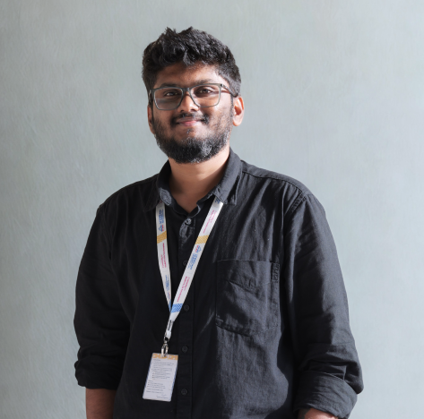
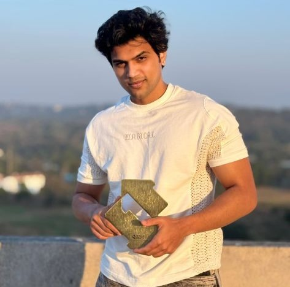
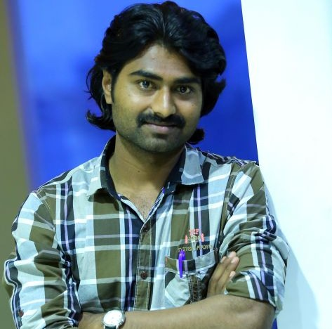

People

Prof. Hossein Martin Fazeli
Professor of Practice
Hossein Martin Fazeli is a distinguished Iranian writer, producer, and director who has been an A-list filmmaker in North America for many years and currently serves as a Professor of Practice at Dadasaheb Phalke International Film School.…

Prof. Prasantanu Mohapatra
Professor of Practice
Prasantanu Mohapatra is a Professor of Practice at the Dadasaheb Phalke International Film School, MIT-WPU. He is the renowned Director of Photography for ‘Kerala Story’ and has been a part of the Indian film industry for over 35 years.…

Maisam Ali
Assistant Professor
Maisam Ali is an independent filmmaker with expertise in both short and feature films. He is a graduate of the Film and Television Institute of India (FTII), majoring in Film Direction. His short films have been exhibited and honoured in…

Dr. Abhijith B
Assistant Professor
Abhijith B serves as an Assistant Professor at the Dadasaheb Phalke International Film Institute, MIT-WPU. He holds a PhD in Cultural Studies from The English and Foreign Languages University, Hyderabad. His study concentrates on…
Dr. Namrata Sathe
Assistant Professor
Dr. Namrata Sathe is an Assistant Professor at the Dadasaheb Phalke International Film Institute, MIT-WPU. She holds a PhD in Media Studies from Southern Illinois University, Carbondale. Her book,

Abhinay Kamble
Teaching Associate
Abhinay Kamble brings together academic depth and creative practice as a filmmaker and media professional, A UGC-NET Qualified with a strong academic foundation in Psychology (B.A.) and Media and Communication Studies (M.Sc. Savitribai…

Prathamesh Sonawani
Teaching Associate
Prathamesh Sonawani believes teaching is about awakening perception, not just delivering information. In his classes, he encourages students to listen, observe, and think critically about sound, performance, and storytelling as lived…

Mr. Bhushan Ganurkar
Teaching Assistant cum Studio Executive
Bhushan Ganurkar is a Creative Videographer with 9 years of Video Production Expertise. He has a postgraduate degree in mass communication (video production) from Pune University and is associated with Dadasaheb Phalke International Film…